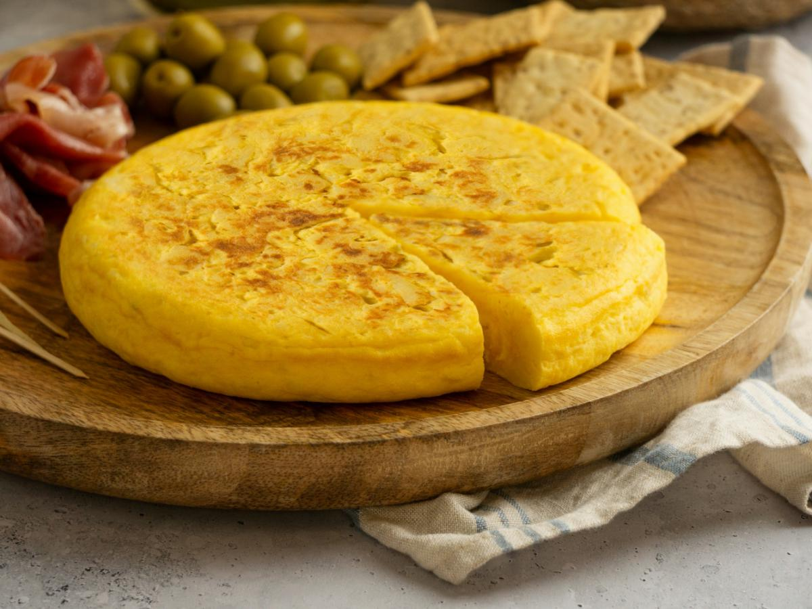

Tortilla Española, also known as Spanish omelette, is a classic Spanish dish made from simple ingredients — potatoes, eggs, and often onions — cooked slowly in olive oil. It's golden on the outside and tender inside, with a comforting, savory flavor. Served warm or at room temperature, it's a staple of Spanish cuisine, enjoyed as a tapa, light meal, or even a picnic dish.